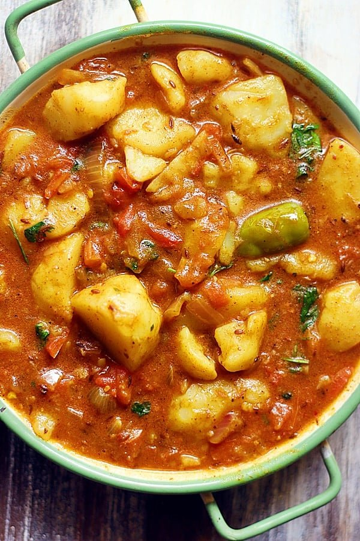

Potato Curry

Description
This is a great creamy and mild curry recipe
Ingredients
- 3 Tablespoons Gee
- 1 teaspoon cumin seeds
- 1 teaspoon tumeric
- 1 teaspoon ground coriander
- 1 teaspoon salt
- 1/2 teaspoon mustard seed
- 1/2 teaspoon ground cayenne pepper
- 6 medium potatoes, peeled and diced
- 2 cups water
- 1 cup yoghurt
- 2/3 cup frozen green peas
Steps
- Heat the ghee in a skillet over medium heat
- Mix in the cumin, tumeric, oriander, salt, mustard seed and cayenne pepper
- Place potatoes in the skillet and stir to evenly coat with ghee. Cook for 10 minutes, stirring often
- Pour water into the skilet. Reduce heat to low and simmer for 30 minutes
- Mix yoghurt and peas into the saucepan. Continue cooking until heated through